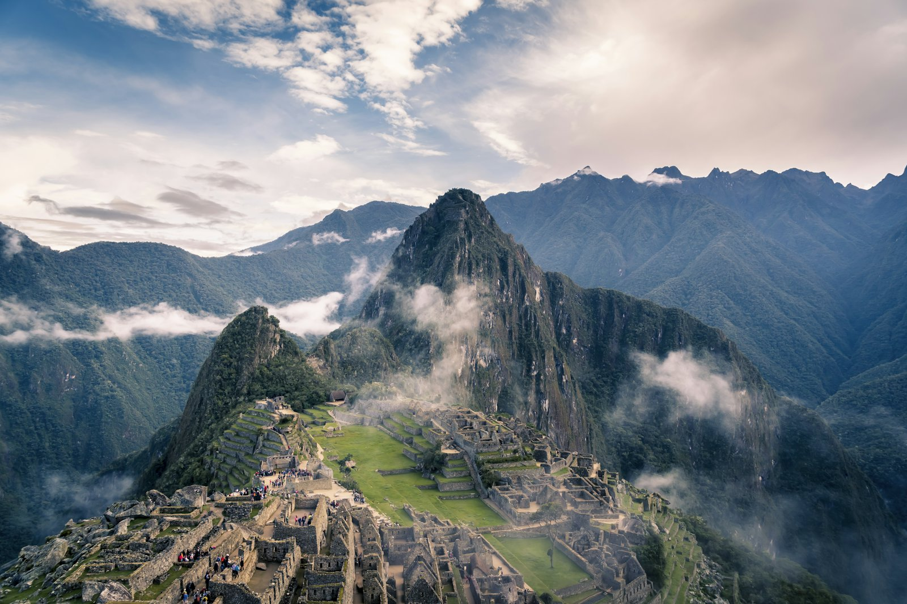
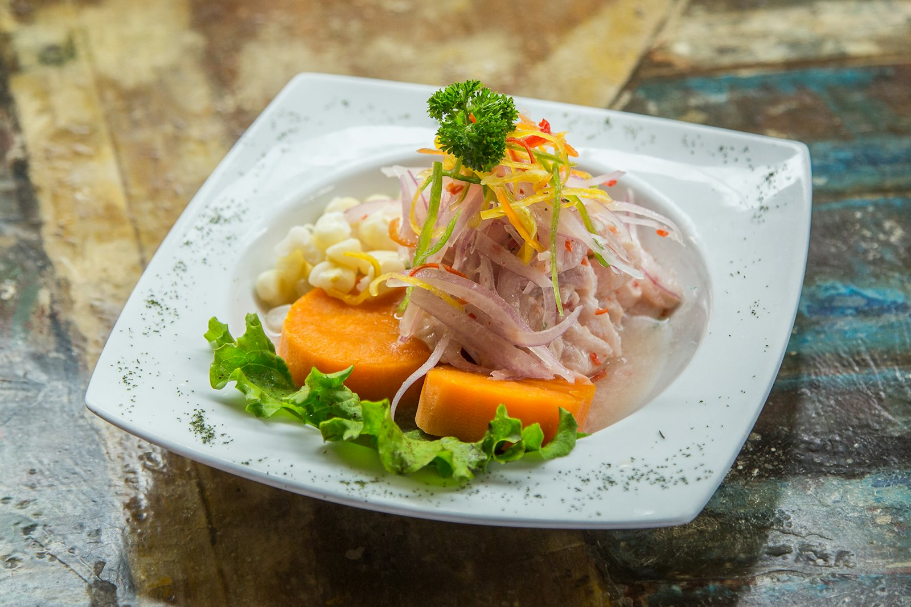
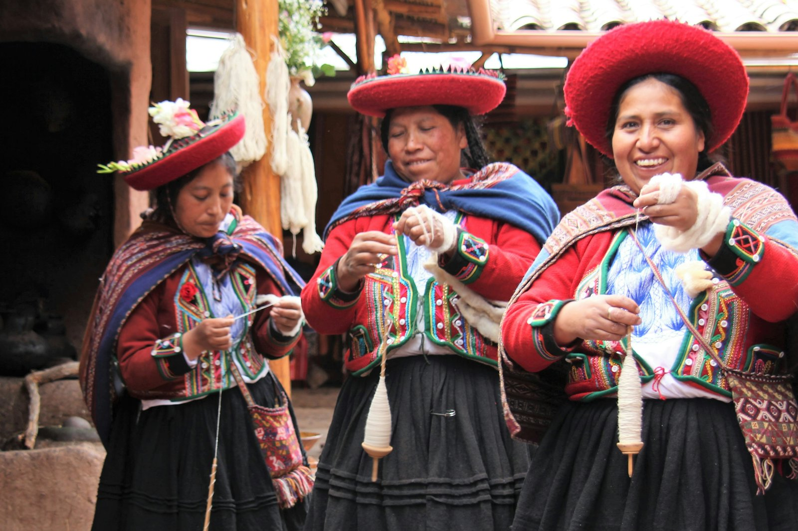
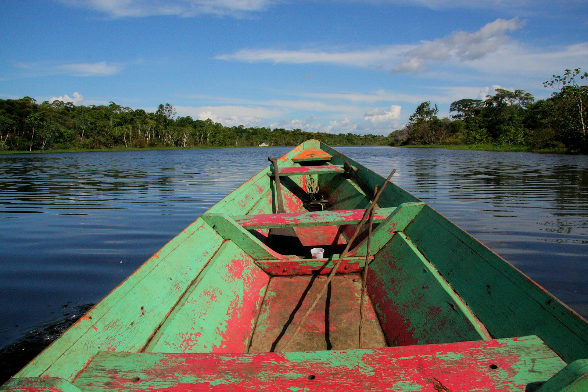
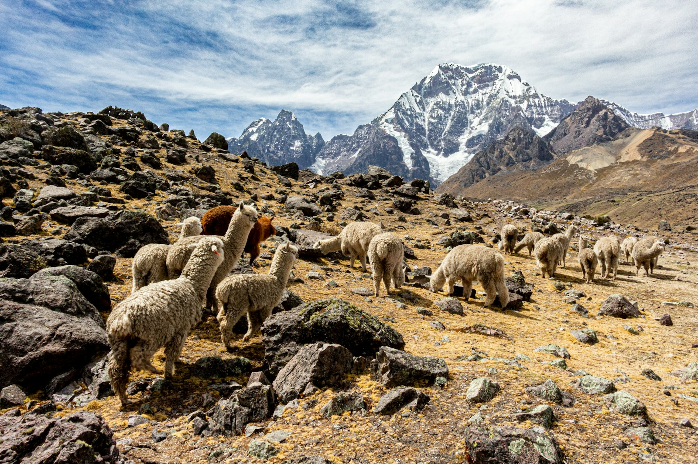

A starting point, not a template
Each journey below is a beginning — a considered framework we reshape, in full, around your budget, your style and your palate.
The Classic Crafted Peru
Lima · Sacred Valley · Machu Picchu · Cusco
Culture, gastronomy and Peru's iconic highlights, brought together with boutique comfort and insider access. The essential Peru — crafted, never rushed.
Taste of Peru
Lima · Arequipa · Sacred Valley
A gastronomic journey through markets, chefs, regional cuisine and hands-on culinary experiences — from ceviche stalls to celebrated tables.


The Andean Soul Journey
Cusco · Sacred Valley · Lake Titicaca
A deeper cultural experience exploring artisan traditions, local communities and extraordinary landscapes — the Peru that draws Patricia home.
Amazon & Andes
Amazon Basin · Cusco · Sacred Valley
A luxury Amazon lodge combined with the cultural richness of the Andes — wildlife, nature and meaningful human connection, sunrise to sunset.

Every journey is tailored to your budget, your style and your palate — from budget-friendly adventures to fully private, luxury travel.
